Bessel functions and related functions¶
The functions in this section arise as solutions to various differential equations in physics, typically describing wavelike oscillatory behavior or a combination of oscillation and exponential decay or growth. Mathematically, they are special cases of the confluent hypergeometric functions 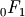, 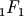 and 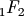 (see Hypergeometric functions).
Bessel functions¶
besselj()¶
- mpmath.besselj(n, x, derivative=0)¶
besselj(n, x, derivative=0) gives the Bessel function of the first kind 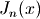. Bessel functions of the first kind are defined as solutions of the differential equation
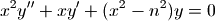
which appears, among other things, when solving the radial part of Laplace’s equation in cylindrical coordinates. This equation has two solutions for given 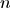, where the 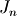-function is the solution that is nonsingular at 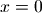. For positive integer , behaves roughly like a sine (odd ) or cosine (even ) multiplied by a magnitude factor that decays slowly as 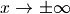.
Generally, is a special case of the hypergeometric function :
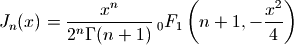
With derivative = 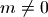, the 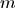-th derivative
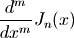
is computed.
Plots
# Bessel function J_n(x) on the real line for n=0,1,2,3 j0 = lambda x: besselj(0,x) j1 = lambda x: besselj(1,x) j2 = lambda x: besselj(2,x) j3 = lambda x: besselj(3,x) plot([j0,j1,j2,j3],[0,14])

# Bessel function J_n(z) in the complex plane cplot(lambda z: besselj(1,z), [-8,8], [-8,8], points=50000)

Examples
Evaluation is supported for arbitrary arguments, and at arbitrary precision:
>>> from mpmath import * >>> mp.dps = 15; mp.pretty = True >>> besselj(2, 1000) -0.024777229528606 >>> besselj(4, 0.75) 0.000801070086542314 >>> besselj(2, 1000j) (-2.48071721019185e+432 + 6.41567059811949e-437j) >>> mp.dps = 25 >>> besselj(0.75j, 3+4j) (-2.778118364828153309919653 - 1.5863603889018621585533j) >>> mp.dps = 50 >>> besselj(1, pi) 0.28461534317975275734531059968613140570981118184947
Arguments may be large:
>>> mp.dps = 25 >>> besselj(0, 10000) -0.007096160353388801477265164 >>> besselj(0, 10**10) 0.000002175591750246891726859055 >>> besselj(2, 10**100) 7.337048736538615712436929e-51 >>> besselj(2, 10**5*j) (-3.540725411970948860173735e+43426 + 4.4949812409615803110051e-43433j)
The Bessel functions of the first kind satisfy simple symmetries around :
>>> mp.dps = 15 >>> nprint([besselj(n,0) for n in range(5)]) [1.0, 0.0, 0.0, 0.0, 0.0] >>> nprint([besselj(n,pi) for n in range(5)]) [-0.304242, 0.284615, 0.485434, 0.333458, 0.151425] >>> nprint([besselj(n,-pi) for n in range(5)]) [-0.304242, -0.284615, 0.485434, -0.333458, 0.151425]
Roots of Bessel functions are often used:
>>> nprint([findroot(j0, k) for k in [2, 5, 8, 11, 14]]) [2.40483, 5.52008, 8.65373, 11.7915, 14.9309] >>> nprint([findroot(j1, k) for k in [3, 7, 10, 13, 16]]) [3.83171, 7.01559, 10.1735, 13.3237, 16.4706]
The roots are not periodic, but the distance between successive roots asymptotically approaches 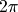. Bessel functions of the first kind have the following normalization:
>>> quadosc(j0, [0, inf], period=2*pi) 1.0 >>> quadosc(j1, [0, inf], period=2*pi) 1.0
For 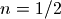 or 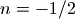, the Bessel function reduces to a trigonometric function:
>>> x = 10 >>> besselj(0.5, x), sqrt(2/(pi*x))*sin(x) (-0.13726373575505, -0.13726373575505) >>> besselj(-0.5, x), sqrt(2/(pi*x))*cos(x) (-0.211708866331398, -0.211708866331398)
Derivatives of any order can be computed (negative orders correspond to integration):
>>> mp.dps = 25 >>> besselj(0, 7.5, 1) -0.1352484275797055051822405 >>> diff(lambda x: besselj(0,x), 7.5) -0.1352484275797055051822405 >>> besselj(0, 7.5, 10) -0.1377811164763244890135677 >>> diff(lambda x: besselj(0,x), 7.5, 10) -0.1377811164763244890135677 >>> besselj(0,7.5,-1) - besselj(0,3.5,-1) -0.1241343240399987693521378 >>> quad(j0, [3.5, 7.5]) -0.1241343240399987693521378
Differentiation with a noninteger order gives the fractional derivative in the sense of the Riemann-Liouville differintegral, as computed by differint():
>>> mp.dps = 15 >>> besselj(1, 3.5, 0.75) -0.385977722939384 >>> differint(lambda x: besselj(1, x), 3.5, 0.75) -0.385977722939384
bessely()¶
- mpmath.bessely(n, x, derivative=0)¶
bessely(n, x, derivative=0) gives the Bessel function of the second kind,
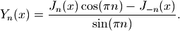
For an integer, this formula should be understood as a limit. With derivative = , the -th derivative
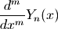
is computed.
Plots
# Bessel function of 2nd kind Y_n(x) on the real line for n=0,1,2,3 y0 = lambda x: bessely(0,x) y1 = lambda x: bessely(1,x) y2 = lambda x: bessely(2,x) y3 = lambda x: bessely(3,x) plot([y0,y1,y2,y3],[0,10],[-4,1])

# Bessel function of 2nd kind Y_n(z) in the complex plane cplot(lambda z: bessely(1,z), [-8,8], [-8,8], points=50000)

Examples
Some values of 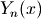:
>>> from mpmath import * >>> mp.dps = 25; mp.pretty = True >>> bessely(0,0), bessely(1,0), bessely(2,0) (-inf, -inf, -inf) >>> bessely(1, pi) 0.3588729167767189594679827 >>> bessely(0.5, 3+4j) (9.242861436961450520325216 - 3.085042824915332562522402j)
Arguments may be large:
>>> bessely(0, 10000) 0.00364780555898660588668872 >>> bessely(2.5, 10**50) -4.8952500412050989295774e-26 >>> bessely(2.5, -10**50) (0.0 + 4.8952500412050989295774e-26j)
Derivatives and antiderivatives of any order can be computed:
>>> bessely(2, 3.5, 1) 0.3842618820422660066089231 >>> diff(lambda x: bessely(2, x), 3.5) 0.3842618820422660066089231 >>> bessely(0.5, 3.5, 1) -0.2066598304156764337900417 >>> diff(lambda x: bessely(0.5, x), 3.5) -0.2066598304156764337900417 >>> diff(lambda x: bessely(2, x), 0.5, 10) -208173867409.5547350101511 >>> bessely(2, 0.5, 10) -208173867409.5547350101511 >>> bessely(2, 100.5, 100) 0.02668487547301372334849043 >>> quad(lambda x: bessely(2,x), [1,3]) -1.377046859093181969213262 >>> bessely(2,3,-1) - bessely(2,1,-1) -1.377046859093181969213262
besseli()¶
- mpmath.besseli(n, x, derivative=0)¶
besseli(n, x, derivative=0) gives the modified Bessel function of the first kind,
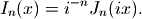
With derivative = , the -th derivative
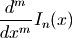
is computed.
Plots
# Modified Bessel function I_n(x) on the real line for n=0,1,2,3 i0 = lambda x: besseli(0,x) i1 = lambda x: besseli(1,x) i2 = lambda x: besseli(2,x) i3 = lambda x: besseli(3,x) plot([i0,i1,i2,i3],[0,5],[0,5])

# Modified Bessel function I_n(z) in the complex plane cplot(lambda z: besseli(1,z), [-8,8], [-8,8], points=50000)

Examples
Some values of 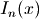:
>>> from mpmath import * >>> mp.dps = 25; mp.pretty = True >>> besseli(0,0) 1.0 >>> besseli(1,0) 0.0 >>> besseli(0,1) 1.266065877752008335598245 >>> besseli(3.5, 2+3j) (-0.2904369752642538144289025 - 0.4469098397654815837307006j)
Arguments may be large:
>>> besseli(2, 1000) 2.480717210191852440616782e+432 >>> besseli(2, 10**10) 4.299602851624027900335391e+4342944813 >>> besseli(2, 6000+10000j) (-2.114650753239580827144204e+2603 + 4.385040221241629041351886e+2602j)
For integers , the following integral representation holds:
>>> mp.dps = 15 >>> n = 3 >>> x = 2.3 >>> quad(lambda t: exp(x*cos(t))*cos(n*t), [0,pi])/pi 0.349223221159309 >>> besseli(n,x) 0.349223221159309
Derivatives and antiderivatives of any order can be computed:
>>> mp.dps = 25 >>> besseli(2, 7.5, 1) 195.8229038931399062565883 >>> diff(lambda x: besseli(2,x), 7.5) 195.8229038931399062565883 >>> besseli(2, 7.5, 10) 153.3296508971734525525176 >>> diff(lambda x: besseli(2,x), 7.5, 10) 153.3296508971734525525176 >>> besseli(2,7.5,-1) - besseli(2,3.5,-1) 202.5043900051930141956876 >>> quad(lambda x: besseli(2,x), [3.5, 7.5]) 202.5043900051930141956876
besselk()¶
- mpmath.besselk(n, x)¶
besselk(n, x) gives the modified Bessel function of the second kind,
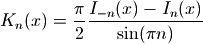
For an integer, this formula should be understood as a limit.
Plots
# Modified Bessel function of 2nd kind K_n(x) on the real line for n=0,1,2,3 k0 = lambda x: besselk(0,x) k1 = lambda x: besselk(1,x) k2 = lambda x: besselk(2,x) k3 = lambda x: besselk(3,x) plot([k0,k1,k2,k3],[0,8],[0,5])

# Modified Bessel function of 2nd kind K_n(z) in the complex plane cplot(lambda z: besselk(1,z), [-8,8], [-8,8], points=50000)

Examples
Evaluation is supported for arbitrary complex arguments:
>>> from mpmath import * >>> mp.dps = 25; mp.pretty = True >>> besselk(0,1) 0.4210244382407083333356274 >>> besselk(0, -1) (0.4210244382407083333356274 - 3.97746326050642263725661j) >>> besselk(3.5, 2+3j) (-0.02090732889633760668464128 + 0.2464022641351420167819697j) >>> besselk(2+3j, 0.5) (0.9615816021726349402626083 + 0.1918250181801757416908224j)
Arguments may be large:
>>> besselk(0, 100) 4.656628229175902018939005e-45 >>> besselk(1, 10**6) 4.131967049321725588398296e-434298 >>> besselk(1, 10**6*j) (0.001140348428252385844876706 - 0.0005200017201681152909000961j) >>> besselk(4.5, fmul(10**50, j, exact=True)) (1.561034538142413947789221e-26 + 1.243554598118700063281496e-25j)
The point is a singularity (logarithmic if 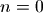):
>>> besselk(0,0) +inf >>> besselk(1,0) +inf >>> for n in range(-4, 5): ... print besselk(n, '1e-1000') ... 4.8e+4001 8.0e+3000 2.0e+2000 1.0e+1000 2302.701024509704096466802 1.0e+1000 2.0e+2000 8.0e+3000 4.8e+4001
Hankel functions¶
hankel1()¶
- mpmath.hankel1(n, x)¶
hankel1(n,x) computes the Hankel function of the first kind, which is the complex combination of Bessel functions given by
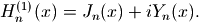
Plots
# Hankel function H1_n(x) on the real line for n=0,1,2,3 h0 = lambda x: hankel1(0,x) h1 = lambda x: hankel1(1,x) h2 = lambda x: hankel1(2,x) h3 = lambda x: hankel1(3,x) plot([h0,h1,h2,h3],[0,6],[-2,1])

# Hankel function H1_n(z) in the complex plane cplot(lambda z: hankel1(1,z), [-8,8], [-8,8], points=50000)

Examples
The Hankel function is generally complex-valued:
>>> from mpmath import * >>> mp.dps = 25; mp.pretty = True >>> hankel1(2, pi) (0.4854339326315091097054957 - 0.0999007139290278787734903j) >>> hankel1(3.5, pi) (0.2340002029630507922628888 - 0.6419643823412927142424049j)
hankel2()¶
- mpmath.hankel2(n, x)¶
hankel2(n,x) computes the Hankel function of the second kind, which is the complex combination of Bessel functions given by
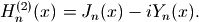
Plots
# Hankel function H2_n(x) on the real line for n=0,1,2,3 h0 = lambda x: hankel2(0,x) h1 = lambda x: hankel2(1,x) h2 = lambda x: hankel2(2,x) h3 = lambda x: hankel2(3,x) plot([h0,h1,h2,h3],[0,6],[-1,2])

# Hankel function H2_n(z) in the complex plane cplot(lambda z: hankel2(1,z), [-8,8], [-8,8], points=50000)

Examples
The Hankel function is generally complex-valued:
>>> from mpmath import * >>> mp.dps = 25; mp.pretty = True >>> hankel2(2, pi) (0.4854339326315091097054957 + 0.0999007139290278787734903j) >>> hankel2(3.5, pi) (0.2340002029630507922628888 + 0.6419643823412927142424049j)
Kelvin functions¶
ber()¶
- mpmath.ber(ctx, n, z, **kwargs)¶
Computes the Kelvin function ber, which for real arguments gives the real part of the Bessel J function of a rotated argument
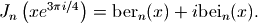
The imaginary part is given by bei().
Plots
# Kelvin functions ber_n(x) and bei_n(x) on the real line for n=0,2 f0 = lambda x: ber(0,x) f1 = lambda x: bei(0,x) f2 = lambda x: ber(2,x) f3 = lambda x: bei(2,x) plot([f0,f1,f2,f3],[0,10],[-10,10])

Examples
Verifying the defining relation:
>>> from mpmath import * >>> mp.dps = 25; mp.pretty = True >>> n, x = 2, 3.5 >>> ber(n,x) 1.442338852571888752631129 >>> bei(n,x) -0.948359035324558320217678 >>> besselj(n, x*root(1,8,3)) (1.442338852571888752631129 - 0.948359035324558320217678j)
The ber and bei functions are also defined by analytic continuation for complex arguments:
>>> ber(1+j, 2+3j) (4.675445984756614424069563 - 15.84901771719130765656316j) >>> bei(1+j, 2+3j) (15.83886679193707699364398 + 4.684053288183046528703611j)
bei()¶
ker()¶
- mpmath.ker(ctx, n, z, **kwargs)¶
Computes the Kelvin function ker, which for real arguments gives the real part of the (rescaled) Bessel K function of a rotated argument
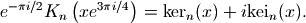
The imaginary part is given by kei().
Plots
# Kelvin functions ker_n(x) and kei_n(x) on the real line for n=0,2 f0 = lambda x: ker(0,x) f1 = lambda x: kei(0,x) f2 = lambda x: ker(2,x) f3 = lambda x: kei(2,x) plot([f0,f1,f2,f3],[0,5],[-1,4])

Examples
Verifying the defining relation:
>>> from mpmath import * >>> mp.dps = 25; mp.pretty = True >>> n, x = 2, 4.5 >>> ker(n,x) 0.02542895201906369640249801 >>> kei(n,x) -0.02074960467222823237055351 >>> exp(-n*pi*j/2) * besselk(n, x*root(1,8,1)) (0.02542895201906369640249801 - 0.02074960467222823237055351j)
The ker and kei functions are also defined by analytic continuation for complex arguments:
>>> ker(1+j, 3+4j) (1.586084268115490421090533 - 2.939717517906339193598719j) >>> kei(1+j, 3+4j) (-2.940403256319453402690132 - 1.585621643835618941044855j)
Struve functions¶
struveh()¶
- mpmath.struveh(ctx, n, z, **kwargs)¶
Gives the Struve function
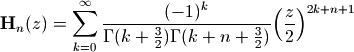
which is a solution to the Struve differential equation
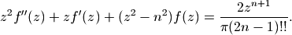
Examples
Evaluation for arbitrary real and complex arguments:
>>> from mpmath import * >>> mp.dps = 25; mp.pretty = True >>> struveh(0, 3.5) 0.3608207733778295024977797 >>> struveh(-1, 10) -0.255212719726956768034732 >>> struveh(1, -100.5) 0.5819566816797362287502246 >>> struveh(2.5, 10000000000000) 3153915652525200060.308937 >>> struveh(2.5, -10000000000000) (0.0 - 3153915652525200060.308937j) >>> struveh(1+j, 1000000+4000000j) (-3.066421087689197632388731e+1737173 - 1.596619701076529803290973e+1737173j)
A Struve function of half-integer order is elementary; for example:
>>> z = 3 >>> struveh(0.5, 3) 0.9167076867564138178671595 >>> sqrt(2/(pi*z))*(1-cos(z)) 0.9167076867564138178671595
Numerically verifying the differential equation:
>>> z = mpf(4.5) >>> n = 3 >>> f = lambda z: struveh(n,z) >>> lhs = z**2*diff(f,z,2) + z*diff(f,z) + (z**2-n**2)*f(z) >>> rhs = 2*z**(n+1)/fac2(2*n-1)/pi >>> lhs 17.40359302709875496632744 >>> rhs 17.40359302709875496632744
struvel()¶
- mpmath.struvel(ctx, n, z, **kwargs)¶
Gives the modified Struve function
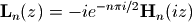
which solves to the modified Struve differential equation
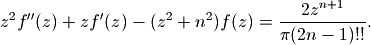
Examples
Evaluation for arbitrary real and complex arguments:
>>> from mpmath import * >>> mp.dps = 25; mp.pretty = True >>> struvel(0, 3.5) 7.180846515103737996249972 >>> struvel(-1, 10) 2670.994904980850550721511 >>> struvel(1, -100.5) 1.757089288053346261497686e+42 >>> struvel(2.5, 10000000000000) 4.160893281017115450519948e+4342944819025 >>> struvel(2.5, -10000000000000) (0.0 - 4.160893281017115450519948e+4342944819025j) >>> struvel(1+j, 700j) (-0.1721150049480079451246076 + 0.1240770953126831093464055j) >>> struvel(1+j, 1000000+4000000j) (-2.973341637511505389128708e+434290 - 5.164633059729968297147448e+434290j)
Numerically verifying the differential equation:
>>> z = mpf(3.5) >>> n = 3 >>> f = lambda z: struvel(n,z) >>> lhs = z**2*diff(f,z,2) + z*diff(f,z) - (z**2+n**2)*f(z) >>> rhs = 2*z**(n+1)/fac2(2*n-1)/pi >>> lhs 6.368850306060678353018165 >>> rhs 6.368850306060678353018165
Anger-Weber functions¶
angerj()¶
- mpmath.angerj(ctx, v, z, **kwargs)¶
Gives the Anger function
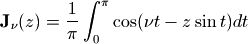
which is an entire function of both the parameter 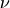 and the argument 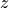. It solves the inhomogeneous Bessel differential equation
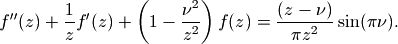
Examples
Evaluation for real and complex parameter and argument:
>>> from mpmath import * >>> mp.dps = 25; mp.pretty = True >>> angerj(2,3) 0.4860912605858910769078311 >>> angerj(-3+4j, 2+5j) (-5033.358320403384472395612 + 585.8011892476145118551756j) >>> angerj(3.25, 1e6j) (4.630743639715893346570743e+434290 - 1.117960409887505906848456e+434291j) >>> angerj(-1.5, 1e6) 0.0002795719747073879393087011
The Anger function coincides with the Bessel J-function when is an integer:
>>> angerj(1,3); besselj(1,3) 0.3390589585259364589255146 0.3390589585259364589255146 >>> angerj(1.5,3); besselj(1.5,3) 0.4088969848691080859328847 0.4777182150870917715515015
Verifying the differential equation:
>>> v,z = mpf(2.25), 0.75 >>> f = lambda z: angerj(v,z) >>> diff(f,z,2) + diff(f,z)/z + (1-(v/z)**2)*f(z) -0.6002108774380707130367995 >>> (z-v)/(pi*z**2) * sinpi(v) -0.6002108774380707130367995
Verifying the integral representation:
>>> angerj(v,z) 0.1145380759919333180900501 >>> quad(lambda t: cos(v*t-z*sin(t))/pi, [0,pi]) 0.1145380759919333180900501
References
- [DLMF] section 11.10: Anger-Weber Functions
webere()¶
- mpmath.webere(ctx, v, z, **kwargs)¶
Gives the Weber function
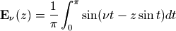
which is an entire function of both the parameter and the argument . It solves the inhomogeneous Bessel differential equation

Examples
Evaluation for real and complex parameter and argument:
>>> from mpmath import * >>> mp.dps = 25; mp.pretty = True >>> webere(2,3) -0.1057668973099018425662646 >>> webere(-3+4j, 2+5j) (-585.8081418209852019290498 - 5033.314488899926921597203j) >>> webere(3.25, 1e6j) (-1.117960409887505906848456e+434291 - 4.630743639715893346570743e+434290j) >>> webere(3.25, 1e6) -0.00002812518265894315604914453
Up to addition of a rational function of , the Weber function coincides with the Struve H-function when is an integer:
>>> webere(1,3); 2/pi-struveh(1,3) -0.3834897968188690177372881 -0.3834897968188690177372881 >>> webere(5,3); 26/(35*pi)-struveh(5,3) 0.2009680659308154011878075 0.2009680659308154011878075
Verifying the differential equation:
>>> v,z = mpf(2.25), 0.75 >>> f = lambda z: webere(v,z) >>> diff(f,z,2) + diff(f,z)/z + (1-(v/z)**2)*f(z) -1.097441848875479535164627 >>> -(z+v+(z-v)*cospi(v))/(pi*z**2) -1.097441848875479535164627
Verifying the integral representation:
>>> webere(v,z) 0.1486507351534283744485421 >>> quad(lambda t: sin(v*t-z*sin(t))/pi, [0,pi]) 0.1486507351534283744485421
References
- [DLMF] section 11.10: Anger-Weber Functions
Lommel functions¶
lommels1()¶
- mpmath.lommels1(ctx, u, v, z, **kwargs)¶
Gives the Lommel function 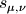 or 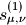
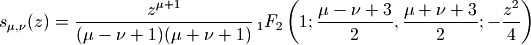
which solves the inhomogeneous Bessel equation
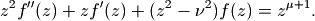
A second solution is given by lommels2().
Plots
# Lommel function s_(u,v)(x) on the real line for a few different u,v f1 = lambda x: lommels1(-1,2.5,x) f2 = lambda x: lommels1(0,0.5,x) f3 = lambda x: lommels1(0,6,x) f4 = lambda x: lommels1(0.5,3,x) plot([f1,f2,f3,f4], [0,20])

Examples
An integral representation:
>>> from mpmath import * >>> mp.dps = 25; mp.pretty = True >>> u,v,z = 0.25, 0.125, mpf(0.75) >>> lommels1(u,v,z) 0.4276243877565150372999126 >>> (bessely(v,z)*quad(lambda t: t**u*besselj(v,t), [0,z]) - \ ... besselj(v,z)*quad(lambda t: t**u*bessely(v,t), [0,z]))*(pi/2) 0.4276243877565150372999126
A special value:
>>> lommels1(v,v,z) 0.5461221367746048054932553 >>> gamma(v+0.5)*sqrt(pi)*power(2,v-1)*struveh(v,z) 0.5461221367746048054932553
Verifying the differential equation:
>>> f = lambda z: lommels1(u,v,z) >>> z**2*diff(f,z,2) + z*diff(f,z) + (z**2-v**2)*f(z) 0.6979536443265746992059141 >>> z**(u+1) 0.6979536443265746992059141
References
lommels2()¶
- mpmath.lommels2(ctx, u, v, z, **kwargs)¶
Gives the second Lommel function 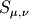 or 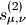
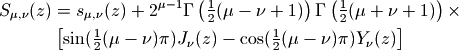
which solves the same differential equation as lommels1().
Plots
# Lommel function S_(u,v)(x) on the real line for a few different u,v f1 = lambda x: lommels2(-1,2.5,x) f2 = lambda x: lommels2(1.5,2,x) f3 = lambda x: lommels2(2.5,1,x) f4 = lambda x: lommels2(3.5,-0.5,x) plot([f1,f2,f3,f4], [0,8], [-8,8])

Examples
For large 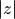, 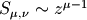:
>>> from mpmath import * >>> mp.dps = 25; mp.pretty = True >>> lommels2(10,2,30000) 1.968299831601008419949804e+40 >>> power(30000,9) 1.9683e+40
A special value:
>>> u,v,z = 0.5, 0.125, mpf(0.75) >>> lommels2(v,v,z) 0.9589683199624672099969765 >>> (struveh(v,z)-bessely(v,z))*power(2,v-1)*sqrt(pi)*gamma(v+0.5) 0.9589683199624672099969765
Verifying the differential equation:
>>> f = lambda z: lommels2(u,v,z) >>> z**2*diff(f,z,2) + z*diff(f,z) + (z**2-v**2)*f(z) 0.6495190528383289850727924 >>> z**(u+1) 0.6495190528383289850727924
References
Airy and Scorer functions¶
airyai()¶
- mpmath.airyai(z, derivative=0, **kwargs)¶
Computes the Airy function 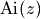, which is the solution of the Airy differential equation 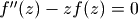 with initial conditions
Other common ways of defining the Ai-function include integrals such as
The Ai-function is an entire function with a turning point, behaving roughly like a slowly decaying sine wave for and like a rapidly decreasing exponential for . A second solution of the Airy differential equation is given by (see airybi()).
Optionally, with derivative=alpha, airyai() can compute the -th order fractional derivative with respect to . For this gives the derivative , and for this gives the -fold iterated integral
The Ai-function has infinitely many zeros, all located along the negative half of the real axis. They can be computed with airyaizero().
Plots
# Airy function Ai(x), Ai'(x) and int_0^x Ai(t) dt on the real line f = airyai f_diff = lambda z: airyai(z, derivative=1) f_int = lambda z: airyai(z, derivative=-1) plot([f, f_diff, f_int], [-10,5])

# Airy function Ai(z) in the complex plane cplot(airyai, [-8,8], [-8,8], points=50000)

Basic examples
Limits and values include:
>>> from mpmath import * >>> mp.dps = 25; mp.pretty = True >>> airyai(0); 1/(power(3,'2/3')*gamma('2/3')) 0.3550280538878172392600632 0.3550280538878172392600632 >>> airyai(1) 0.1352924163128814155241474 >>> airyai(-1) 0.5355608832923521187995166 >>> airyai(inf); airyai(-inf) 0.0 0.0
Evaluation is supported for large magnitudes of the argument:
>>> airyai(-100) 0.1767533932395528780908311 >>> airyai(100) 2.634482152088184489550553e-291 >>> airyai(50+50j) (-5.31790195707456404099817e-68 - 1.163588003770709748720107e-67j) >>> airyai(-50+50j) (1.041242537363167632587245e+158 + 3.347525544923600321838281e+157j)
Huge arguments are also fine:
>>> airyai(10**10) 1.162235978298741779953693e-289529654602171 >>> airyai(-10**10) 0.0001736206448152818510510181 >>> w = airyai(10**10*(1+j)) >>> w.real 5.711508683721355528322567e-186339621747698 >>> w.imag 1.867245506962312577848166e-186339621747697
The first root of the Ai-function is:
>>> findroot(airyai, -2) -2.338107410459767038489197 >>> airyaizero(1) -2.338107410459767038489197
Properties and relations
Verifying the Airy differential equation:
>>> for z in [-3.4, 0, 2.5, 1+2j]: ... chop(airyai(z,2) - z*airyai(z)) ... 0.0 0.0 0.0 0.0
The first few terms of the Taylor series expansion around (every third term is zero):
>>> nprint(taylor(airyai, 0, 5)) [0.355028, -0.258819, 0.0, 0.0591713, -0.0215683, 0.0]
The Airy functions satisfy the Wronskian relation :
>>> z = -0.5 >>> airyai(z)*airybi(z,1) - airyai(z,1)*airybi(z) 0.3183098861837906715377675 >>> 1/pi 0.3183098861837906715377675
The Airy functions can be expressed in terms of Bessel functions of order . For , we have:
>>> z = -3 >>> airyai(z) -0.3788142936776580743472439 >>> y = 2*power(-z,'3/2')/3 >>> (sqrt(-z) * (besselj('1/3',y) + besselj('-1/3',y)))/3 -0.3788142936776580743472439
Derivatives and integrals
Derivatives of the Ai-function (directly and using diff()):
>>> airyai(-3,1); diff(airyai,-3) 0.3145837692165988136507873 0.3145837692165988136507873 >>> airyai(-3,2); diff(airyai,-3,2) 1.136442881032974223041732 1.136442881032974223041732 >>> airyai(1000,1); diff(airyai,1000) -2.943133917910336090459748e-9156 -2.943133917910336090459748e-9156
Several derivatives at :
>>> airyai(0,0); airyai(0,1); airyai(0,2) 0.3550280538878172392600632 -0.2588194037928067984051836 0.0 >>> airyai(0,3); airyai(0,4); airyai(0,5) 0.3550280538878172392600632 -0.5176388075856135968103671 0.0 >>> airyai(0,15); airyai(0,16); airyai(0,17) 1292.30211615165475090663 -3188.655054727379756351861 0.0
The integral of the Ai-function:
>>> airyai(3,-1); quad(airyai, [0,3]) 0.3299203760070217725002701 0.3299203760070217725002701 >>> airyai(-10,-1); quad(airyai, [0,-10]) -0.765698403134212917425148 -0.765698403134212917425148
Integrals of high or fractional order:
>>> airyai(-2,0.5); differint(airyai,-2,0.5,0) (0.0 + 0.2453596101351438273844725j) (0.0 + 0.2453596101351438273844725j) >>> airyai(-2,-4); differint(airyai,-2,-4,0) 0.2939176441636809580339365 0.2939176441636809580339365 >>> airyai(0,-1); airyai(0,-2); airyai(0,-3) 0.0 0.0 0.0
Integrals of the Ai-function can be evaluated at limit points:
>>> airyai(-1000000,-1); airyai(-inf,-1) -0.6666843728311539978751512 -0.6666666666666666666666667 >>> airyai(10,-1); airyai(+inf,-1) 0.3333333332991690159427932 0.3333333333333333333333333 >>> airyai(+inf,-2); airyai(+inf,-3) +inf +inf >>> airyai(-1000000,-2); airyai(-inf,-2) 666666.4078472650651209742 +inf >>> airyai(-1000000,-3); airyai(-inf,-3) -333333074513.7520264995733 -inf
References
- [DLMF] Chapter 9: Airy and Related Functions
- [WolframFunctions] section: Bessel-Type Functions
airybi()¶
- mpmath.airybi(z, derivative=0, **kwargs)¶
Computes the Airy function , which is the solution of the Airy differential equation with initial conditions
Like the Ai-function (see airyai()), the Bi-function is oscillatory for , but it grows rather than decreases for .
Optionally, as for airyai(), derivatives, integrals and fractional derivatives can be computed with the derivative parameter.
The Bi-function has infinitely many zeros along the negative half-axis, as well as complex zeros, which can all be computed with airybizero().
Plots
# Airy function Bi(x), Bi'(x) and int_0^x Bi(t) dt on the real line f = airybi f_diff = lambda z: airybi(z, derivative=1) f_int = lambda z: airybi(z, derivative=-1) plot([f, f_diff, f_int], [-10,2], [-1,2])

# Airy function Bi(z) in the complex plane cplot(airybi, [-8,8], [-8,8], points=50000)

Basic examples
Limits and values include:
>>> from mpmath import * >>> mp.dps = 25; mp.pretty = True >>> airybi(0); 1/(power(3,'1/6')*gamma('2/3')) 0.6149266274460007351509224 0.6149266274460007351509224 >>> airybi(1) 1.207423594952871259436379 >>> airybi(-1) 0.10399738949694461188869 >>> airybi(inf); airybi(-inf) +inf 0.0
Evaluation is supported for large magnitudes of the argument:
>>> airybi(-100) 0.02427388768016013160566747 >>> airybi(100) 6.041223996670201399005265e+288 >>> airybi(50+50j) (-5.322076267321435669290334e+63 + 1.478450291165243789749427e+65j) >>> airybi(-50+50j) (-3.347525544923600321838281e+157 + 1.041242537363167632587245e+158j)
Huge arguments:
>>> airybi(10**10) 1.369385787943539818688433e+289529654602165 >>> airybi(-10**10) 0.001775656141692932747610973 >>> w = airybi(10**10*(1+j)) >>> w.real -6.559955931096196875845858e+186339621747689 >>> w.imag -6.822462726981357180929024e+186339621747690
The first real root of the Bi-function is:
>>> findroot(airybi, -1); airybizero(1) -1.17371322270912792491998 -1.17371322270912792491998
Properties and relations
Verifying the Airy differential equation:
>>> for z in [-3.4, 0, 2.5, 1+2j]: ... chop(airybi(z,2) - z*airybi(z)) ... 0.0 0.0 0.0 0.0
The first few terms of the Taylor series expansion around (every third term is zero):
>>> nprint(taylor(airybi, 0, 5)) [0.614927, 0.448288, 0.0, 0.102488, 0.0373574, 0.0]
The Airy functions can be expressed in terms of Bessel functions of order . For , we have:
>>> z = -3 >>> airybi(z) -0.1982896263749265432206449 >>> p = 2*power(-z,'3/2')/3 >>> sqrt(-mpf(z)/3)*(besselj('-1/3',p) - besselj('1/3',p)) -0.1982896263749265432206449
Derivatives and integrals
Derivatives of the Bi-function (directly and using diff()):
>>> airybi(-3,1); diff(airybi,-3) -0.675611222685258537668032 -0.675611222685258537668032 >>> airybi(-3,2); diff(airybi,-3,2) 0.5948688791247796296619346 0.5948688791247796296619346 >>> airybi(1000,1); diff(airybi,1000) 1.710055114624614989262335e+9156 1.710055114624614989262335e+9156
Several derivatives at :
>>> airybi(0,0); airybi(0,1); airybi(0,2) 0.6149266274460007351509224 0.4482883573538263579148237 0.0 >>> airybi(0,3); airybi(0,4); airybi(0,5) 0.6149266274460007351509224 0.8965767147076527158296474 0.0 >>> airybi(0,15); airybi(0,16); airybi(0,17) 2238.332923903442675949357 5522.912562599140729510628 0.0
The integral of the Bi-function:
>>> airybi(3,-1); quad(airybi, [0,3]) 10.06200303130620056316655 10.06200303130620056316655 >>> airybi(-10,-1); quad(airybi, [0,-10]) -0.01504042480614002045135483 -0.01504042480614002045135483
Integrals of high or fractional order:
>>> airybi(-2,0.5); differint(airybi, -2, 0.5, 0) (0.0 + 0.5019859055341699223453257j) (0.0 + 0.5019859055341699223453257j) >>> airybi(-2,-4); differint(airybi,-2,-4,0) 0.2809314599922447252139092 0.2809314599922447252139092 >>> airybi(0,-1); airybi(0,-2); airybi(0,-3) 0.0 0.0 0.0
Integrals of the Bi-function can be evaluated at limit points:
>>> airybi(-1000000,-1); airybi(-inf,-1) 0.000002191261128063434047966873 0.0 >>> airybi(10,-1); airybi(+inf,-1) 147809803.1074067161675853 +inf >>> airybi(+inf,-2); airybi(+inf,-3) +inf +inf >>> airybi(-1000000,-2); airybi(-inf,-2) 0.4482883750599908479851085 0.4482883573538263579148237 >>> gamma('2/3')*power(3,'2/3')/(2*pi) 0.4482883573538263579148237 >>> airybi(-100000,-3); airybi(-inf,-3) -44828.52827206932872493133 -inf >>> airybi(-100000,-4); airybi(-inf,-4) 2241411040.437759489540248 +inf
airyaizero()¶
- mpmath.airyaizero(k, derivative=0)¶
Gives the -th zero of the Airy Ai-function, i.e. the -th number ordered by magnitude for which .
Optionally, with derivative=1, the corresponding zero of the derivative function, i.e. , is computed.
Examples
Some values of :
>>> from mpmath import * >>> mp.dps = 25; mp.pretty = True >>> airyaizero(1) -2.338107410459767038489197 >>> airyaizero(2) -4.087949444130970616636989 >>> airyaizero(3) -5.520559828095551059129856 >>> airyaizero(1000) -281.0315196125215528353364
Some values of :
>>> airyaizero(1,1) -1.018792971647471089017325 >>> airyaizero(2,1) -3.248197582179836537875424 >>> airyaizero(3,1) -4.820099211178735639400616 >>> airyaizero(1000,1) -280.9378080358935070607097
Verification:
>>> chop(airyai(airyaizero(1))) 0.0 >>> chop(airyai(airyaizero(1,1),1)) 0.0
airybizero()¶
- mpmath.airybizero(k, derivative=0, complex=0)¶
With complex=False, gives the -th real zero of the Airy Bi-function, i.e. the -th number ordered by magnitude for which .
With complex=True, gives the -th complex zero in the upper half plane . Also the conjugate is a zero.
Optionally, with derivative=1, the corresponding zero or of the derivative function, i.e. or , is computed.
Examples
Some values of :
>>> from mpmath import * >>> mp.dps = 25; mp.pretty = True >>> airybizero(1) -1.17371322270912792491998 >>> airybizero(2) -3.271093302836352715680228 >>> airybizero(3) -4.830737841662015932667709 >>> airybizero(1000) -280.9378112034152401578834
Some values of :
>>> airybizero(1,1) -2.294439682614123246622459 >>> airybizero(2,1) -4.073155089071828215552369 >>> airybizero(3,1) -5.512395729663599496259593 >>> airybizero(1000,1) -281.0315164471118527161362
Some values of :
>>> airybizero(1,complex=True) (0.9775448867316206859469927 + 2.141290706038744575749139j) >>> airybizero(2,complex=True) (1.896775013895336346627217 + 3.627291764358919410440499j) >>> airybizero(3,complex=True) (2.633157739354946595708019 + 4.855468179979844983174628j) >>> airybizero(1000,complex=True) (140.4978560578493018899793 + 243.3907724215792121244867j)
Some values of :
>>> airybizero(1,1,complex=True) (0.2149470745374305676088329 + 1.100600143302797880647194j) >>> airybizero(2,1,complex=True) (1.458168309223507392028211 + 2.912249367458445419235083j) >>> airybizero(3,1,complex=True) (2.273760763013482299792362 + 4.254528549217097862167015j) >>> airybizero(1000,1,complex=True) (140.4509972835270559730423 + 243.3096175398562811896208j)
Verification:
>>> chop(airybi(airybizero(1))) 0.0 >>> chop(airybi(airybizero(1,1),1)) 0.0 >>> u = airybizero(1,complex=True) >>> chop(airybi(u)) 0.0 >>> chop(airybi(conj(u))) 0.0
The complex zeros (in the upper and lower half-planes respectively) asymptotically approach the rays :
>>> arg(airybizero(1,complex=True)) 1.142532510286334022305364 >>> arg(airybizero(1000,complex=True)) 1.047271114786212061583917 >>> arg(airybizero(1000000,complex=True)) 1.047197624741816183341355 >>> pi/3 1.047197551196597746154214
scorergi()¶
- mpmath.scorergi(z, **kwargs)¶
Evaluates the Scorer function
which gives a particular solution to the inhomogeneous Airy differential equation . Another particular solution is given by the Scorer Hi-function (scorerhi()). The two functions are related as .
Plots
# Scorer function Gi(x) and Gi'(x) on the real line plot([scorergi, diffun(scorergi)], [-10,10])

# Scorer function Gi(z) in the complex plane cplot(scorergi, [-8,8], [-8,8], points=50000)

Examples
Some values and limits:
>>> from mpmath import * >>> mp.dps = 25; mp.pretty = True >>> scorergi(0); 1/(power(3,'7/6')*gamma('2/3')) 0.2049755424820002450503075 0.2049755424820002450503075 >>> diff(scorergi, 0); 1/(power(3,'5/6')*gamma('1/3')) 0.1494294524512754526382746 0.1494294524512754526382746 >>> scorergi(+inf); scorergi(-inf) 0.0 0.0 >>> scorergi(1) 0.2352184398104379375986902 >>> scorergi(-1) -0.1166722172960152826494198
Evaluation for large arguments:
>>> scorergi(10) 0.03189600510067958798062034 >>> scorergi(100) 0.003183105228162961476590531 >>> scorergi(1000000) 0.0000003183098861837906721743873 >>> 1/(pi*1000000) 0.0000003183098861837906715377675 >>> scorergi(-1000) -0.08358288400262780392338014 >>> scorergi(-100000) 0.02886866118619660226809581 >>> scorergi(50+10j) (0.0061214102799778578790984 - 0.001224335676457532180747917j) >>> scorergi(-50-10j) (5.236047850352252236372551e+29 - 3.08254224233701381482228e+29j) >>> scorergi(100000j) (-8.806659285336231052679025e+6474077 + 8.684731303500835514850962e+6474077j)
Verifying the connection between Gi and Hi:
>>> z = 0.25 >>> scorergi(z) + scorerhi(z) 0.7287469039362150078694543 >>> airybi(z) 0.7287469039362150078694543
Verifying the differential equation:
>>> for z in [-3.4, 0, 2.5, 1+2j]: ... chop(diff(scorergi,z,2) - z*scorergi(z)) ... -0.3183098861837906715377675 -0.3183098861837906715377675 -0.3183098861837906715377675 -0.3183098861837906715377675
Verifying the integral representation:
>>> z = 0.5 >>> scorergi(z) 0.2447210432765581976910539 >>> Ai,Bi = airyai,airybi >>> Bi(z)*(Ai(inf,-1)-Ai(z,-1)) + Ai(z)*(Bi(z,-1)-Bi(0,-1)) 0.2447210432765581976910539
References
- [DLMF] section 9.12: Scorer Functions
scorerhi()¶
- mpmath.scorerhi(z, **kwargs)¶
Evaluates the second Scorer function
which gives a particular solution to the inhomogeneous Airy differential equation . See also scorergi().
Plots
# Scorer function Hi(x) and Hi'(x) on the real line plot([scorerhi, diffun(scorerhi)], [-10,2], [0,2])

# Scorer function Hi(z) in the complex plane cplot(scorerhi, [-8,8], [-8,8], points=50000)

Examples
Some values and limits:
>>> from mpmath import * >>> mp.dps = 25; mp.pretty = True >>> scorerhi(0); 2/(power(3,'7/6')*gamma('2/3')) 0.4099510849640004901006149 0.4099510849640004901006149 >>> diff(scorerhi,0); 2/(power(3,'5/6')*gamma('1/3')) 0.2988589049025509052765491 0.2988589049025509052765491 >>> scorerhi(+inf); scorerhi(-inf) +inf 0.0 >>> scorerhi(1) 0.9722051551424333218376886 >>> scorerhi(-1) 0.2206696067929598945381098
Evaluation for large arguments:
>>> scorerhi(10) 455641153.5163291358991077 >>> scorerhi(100) 6.041223996670201399005265e+288 >>> scorerhi(1000000) 7.138269638197858094311122e+289529652 >>> scorerhi(-10) 0.0317685352825022727415011 >>> scorerhi(-100) 0.003183092495767499864680483 >>> scorerhi(100j) (-6.366197716545672122983857e-9 + 0.003183098861710582761688475j) >>> scorerhi(50+50j) (-5.322076267321435669290334e+63 + 1.478450291165243789749427e+65j) >>> scorerhi(-1000-1000j) (0.0001591549432510502796565538 - 0.000159154943091895334973109j)
Verifying the differential equation:
>>> for z in [-3.4, 0, 2, 1+2j]: ... chop(diff(scorerhi,z,2) - z*scorerhi(z)) ... 0.3183098861837906715377675 0.3183098861837906715377675 0.3183098861837906715377675 0.3183098861837906715377675
Verifying the integral representation:
>>> z = 0.5 >>> scorerhi(z) 0.6095559998265972956089949 >>> Ai,Bi = airyai,airybi >>> Bi(z)*(Ai(z,-1)-Ai(-inf,-1)) - Ai(z)*(Bi(z,-1)-Bi(-inf,-1)) 0.6095559998265972956089949
Coulomb wave functions¶
coulombf()¶
- mpmath.coulombf(l, eta, z)¶
Calculates the regular Coulomb wave function
where the normalization constant is as calculated by coulombc(). This function solves the differential equation
A second linearly independent solution is given by the irregular Coulomb wave function (see coulombg()) and thus the general solution is for arbitrary constants
 , .
Physically, the Coulomb wave functions give the radial solution
to the Schrodinger equation for a point particle in a potential; is
then the radius and , are quantum numbers.
, .
Physically, the Coulomb wave functions give the radial solution
to the Schrodinger equation for a point particle in a potential; is
then the radius and , are quantum numbers.The Coulomb wave functions with real parameters are defined in Abramowitz & Stegun, section 14. However, all parameters are permitted to be complex in this implementation (see references).
Plots
# Regular Coulomb wave functions -- equivalent to figure 14.3 in A&S F1 = lambda x: coulombf(0,0,x) F2 = lambda x: coulombf(0,1,x) F3 = lambda x: coulombf(0,5,x) F4 = lambda x: coulombf(0,10,x) F5 = lambda x: coulombf(0,x/2,x) plot([F1,F2,F3,F4,F5], [0,25], [-1.2,1.6])

# Regular Coulomb wave function in the complex plane cplot(lambda z: coulombf(1,1,z), points=50000)

Examples
Evaluation is supported for arbitrary magnitudes of :
>>> from mpmath import * >>> mp.dps = 25; mp.pretty = True >>> coulombf(2, 1.5, 3.5) 0.4080998961088761187426445 >>> coulombf(-2, 1.5, 3.5) 0.7103040849492536747533465 >>> coulombf(2, 1.5, '1e-10') 4.143324917492256448770769e-33 >>> coulombf(2, 1.5, 1000) 0.4482623140325567050716179 >>> coulombf(2, 1.5, 10**10) -0.066804196437694360046619
Verifying the differential equation:
>>> l, eta, z = 2, 3, mpf(2.75) >>> A, B = 1, 2 >>> f = lambda z: A*coulombf(l,eta,z) + B*coulombg(l,eta,z) >>> chop(diff(f,z,2) + (1-2*eta/z - l*(l+1)/z**2)*f(z)) 0.0
A Wronskian relation satisfied by the Coulomb wave functions:
>>> l = 2 >>> eta = 1.5 >>> F = lambda z: coulombf(l,eta,z) >>> G = lambda z: coulombg(l,eta,z) >>> for z in [3.5, -1, 2+3j]: ... chop(diff(F,z)*G(z) - F(z)*diff(G,z)) ... 1.0 1.0 1.0
Another Wronskian relation:
>>> F = coulombf >>> G = coulombg >>> for z in [3.5, -1, 2+3j]: ... chop(F(l-1,eta,z)*G(l,eta,z)-F(l,eta,z)*G(l-1,eta,z) - l/sqrt(l**2+eta**2)) ... 0.0 0.0 0.0
An integral identity connecting the regular and irregular wave functions:
>>> l, eta, z = 4+j, 2-j, 5+2j >>> coulombf(l,eta,z) + j*coulombg(l,eta,z) (0.7997977752284033239714479 + 0.9294486669502295512503127j) >>> g = lambda t: exp(-t)*t**(l-j*eta)*(t+2*j*z)**(l+j*eta) >>> j*exp(-j*z)*z**(-l)/fac(2*l+1)/coulombc(l,eta)*quad(g, [0,inf]) (0.7997977752284033239714479 + 0.9294486669502295512503127j)
Some test case with complex parameters, taken from Michel [2]:
>>> mp.dps = 15 >>> coulombf(1+0.1j, 50+50j, 100.156) (-1.02107292320897e+15 - 2.83675545731519e+15j) >>> coulombg(1+0.1j, 50+50j, 100.156) (2.83675545731519e+15 - 1.02107292320897e+15j) >>> coulombf(1e-5j, 10+1e-5j, 0.1+1e-6j) (4.30566371247811e-14 - 9.03347835361657e-19j) >>> coulombg(1e-5j, 10+1e-5j, 0.1+1e-6j) (778709182061.134 + 18418936.2660553j)
The following reproduces a table in Abramowitz & Stegun, at twice the precision:
>>> mp.dps = 10 >>> eta = 2; z = 5 >>> for l in [5, 4, 3, 2, 1, 0]: ... print l, coulombf(l,eta,z), diff(lambda z: coulombf(l,eta,z), z) ... 5 0.09079533488 0.1042553261 4 0.2148205331 0.2029591779 3 0.4313159311 0.320534053 2 0.7212774133 0.3952408216 1 0.9935056752 0.3708676452 0 1.143337392 0.2937960375
References
- I.J. Thompson & A.R. Barnett, “Coulomb and Bessel Functions of Complex Arguments and Order”, J. Comp. Phys., vol 64, no. 2, June 1986.
- N. Michel, “Precise Coulomb wave functions for a wide range of complex , and “, http://arxiv.org/abs/physics/0702051v1
coulombg()¶
- mpmath.coulombg(l, eta, z)¶
Calculates the irregular Coulomb wave function
where and .
See coulombf() for additional information.
Plots
# Irregular Coulomb wave functions -- equivalent to figure 14.5 in A&S F1 = lambda x: coulombg(0,0,x) F2 = lambda x: coulombg(0,1,x) F3 = lambda x: coulombg(0,5,x) F4 = lambda x: coulombg(0,10,x) F5 = lambda x: coulombg(0,x/2,x) plot([F1,F2,F3,F4,F5], [0,30], [-2,2])

# Irregular Coulomb wave function in the complex plane cplot(lambda z: coulombg(1,1,z), points=50000)

Examples
Evaluation is supported for arbitrary magnitudes of :
>>> from mpmath import * >>> mp.dps = 25; mp.pretty = True >>> coulombg(-2, 1.5, 3.5) 1.380011900612186346255524 >>> coulombg(2, 1.5, 3.5) 1.919153700722748795245926 >>> coulombg(-2, 1.5, '1e-10') 201126715824.7329115106793 >>> coulombg(-2, 1.5, 1000) 0.1802071520691149410425512 >>> coulombg(-2, 1.5, 10**10) 0.652103020061678070929794
The following reproduces a table in Abramowitz & Stegun, at twice the precision:
>>> mp.dps = 10 >>> eta = 2; z = 5 >>> for l in [1, 2, 3, 4, 5]: ... print l, coulombg(l,eta,z), -diff(lambda z: coulombg(l,eta,z), z) ... 1 1.08148276 0.6028279961 2 1.496877075 0.5661803178 3 2.048694714 0.7959909551 4 3.09408669 1.731802374 5 5.629840456 4.549343289
Evaluation close to the singularity at :
>>> mp.dps = 15 >>> coulombg(0,10,1) 3088184933.67358 >>> coulombg(0,10,'1e-10') 5554866000719.8 >>> coulombg(0,10,'1e-100') 5554866221524.1
Evaluation with a half-integer value for :
>>> coulombg(1.5, 1, 10) 0.852320038297334
coulombc()¶
- mpmath.coulombc(l, eta)¶
Gives the normalizing Gamow constant for Coulomb wave functions,
where the log gamma function with continuous imaginary part away from the negative half axis (see loggamma()) is implied.
This function is used internally for the calculation of Coulomb wave functions, and automatically cached to make multiple evaluations with fixed , fast.
Confluent U and Whittaker functions¶
hyperu()¶
- mpmath.hyperu(a, b, z)¶
Gives the Tricomi confluent hypergeometric function , also known as the Kummer or confluent hypergeometric function of the second kind. This function gives a second linearly independent solution to the confluent hypergeometric differential equation (the first is provided by – see hyp1f1()).
Examples
Evaluation for arbitrary complex arguments:
>>> from mpmath import * >>> mp.dps = 25; mp.pretty = True >>> hyperu(2,3,4) 0.0625 >>> hyperu(0.25, 5, 1000) 0.1779949416140579573763523 >>> hyperu(0.25, 5, -1000) (0.1256256609322773150118907 - 0.1256256609322773150118907j)
The function may be singular at :
>>> hyperu(1.5, 2, 0) +inf >>> hyperu(1.5, -2, 0) 0.1719434921288400112603671
Verifying the differential equation:
>>> a, b = 1.5, 2 >>> f = lambda z: hyperu(a,b,z) >>> for z in [-10, 3, 3+4j]: ... chop(z*diff(f,z,2) + (b-z)*diff(f,z) - a*f(z)) ... 0.0 0.0 0.0
An integral representation:
>>> a,b,z = 2, 3.5, 4.25 >>> hyperu(a,b,z) 0.06674960718150520648014567 >>> quad(lambda t: exp(-z*t)*t**(a-1)*(1+t)**(b-a-1),[0,inf]) / gamma(a) 0.06674960718150520648014567
whitm()¶
- mpmath.whitm(k, m, z)¶
Evaluates the Whittaker function , which gives a solution to the Whittaker differential equation
A second solution is given by whitw().
The Whittaker functions are defined in Abramowitz & Stegun, section 13.1. They are alternate forms of the confluent hypergeometric functions and :
Examples
Evaluation for arbitrary real and complex arguments is supported:
>>> from mpmath import * >>> mp.dps = 25; mp.pretty = True >>> whitm(1, 1, 1) 0.7302596799460411820509668 >>> whitm(1, 1, -1) (0.0 - 1.417977827655098025684246j) >>> whitm(j, j/2, 2+3j) (3.245477713363581112736478 - 0.822879187542699127327782j) >>> whitm(2, 3, 100000) 4.303985255686378497193063e+21707
Evaluation at zero:
>>> whitm(1,-1,0); whitm(1,-0.5,0); whitm(1,0,0) +inf nan 0.0
We can verify that whitm() numerically satisfies the differential equation for arbitrarily chosen values:
>>> k = mpf(0.25) >>> m = mpf(1.5) >>> f = lambda z: whitm(k,m,z) >>> for z in [-1, 2.5, 3, 1+2j]: ... chop(diff(f,z,2) + (-0.25 + k/z + (0.25-m**2)/z**2)*f(z)) ... 0.0 0.0 0.0 0.0
An integral involving both whitm() and whitw(), verifying evaluation along the real axis:
>>> quad(lambda x: exp(-x)*whitm(3,2,x)*whitw(1,-2,x), [0,inf]) 3.438869842576800225207341 >>> 128/(21*sqrt(pi)) 3.438869842576800225207341
whitw()¶
- mpmath.whitw(k, m, z)¶
Evaluates the Whittaker function , which gives a second solution to the Whittaker differential equation. (See whitm().)
Examples
Evaluation for arbitrary real and complex arguments is supported:
>>> from mpmath import * >>> mp.dps = 25; mp.pretty = True >>> whitw(1, 1, 1) 1.19532063107581155661012 >>> whitw(1, 1, -1) (-0.9424875979222187313924639 - 0.2607738054097702293308689j) >>> whitw(j, j/2, 2+3j) (0.1782899315111033879430369 - 0.01609578360403649340169406j) >>> whitw(2, 3, 100000) 1.887705114889527446891274e-21705 >>> whitw(-1, -1, 100) 1.905250692824046162462058e-24
Evaluation at zero:
>>> for m in [-1, -0.5, 0, 0.5, 1]: ... whitw(1, m, 0) ... +inf nan 0.0 nan +inf
We can verify that whitw() numerically satisfies the differential equation for arbitrarily chosen values:
>>> k = mpf(0.25) >>> m = mpf(1.5) >>> f = lambda z: whitw(k,m,z) >>> for z in [-1, 2.5, 3, 1+2j]: ... chop(diff(f,z,2) + (-0.25 + k/z + (0.25-m**2)/z**2)*f(z)) ... 0.0 0.0 0.0 0.0